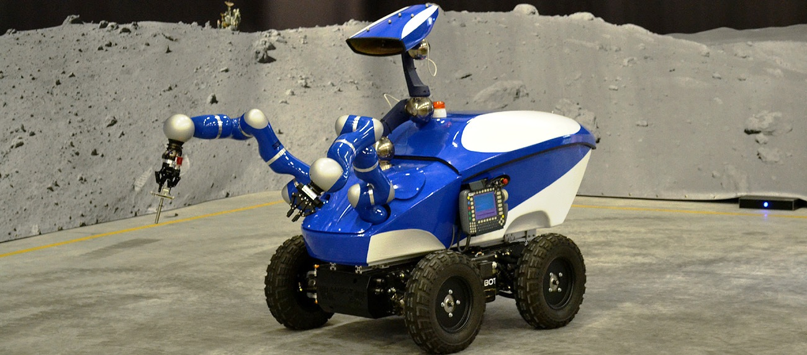
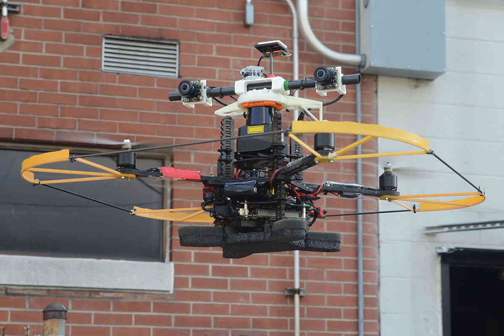

Дистанционные роботы спасатели
Техника
- Дистанционно управляемый робот 
- Коптер для передачи информации 
Мы также будем передавать данные по своей внутренней связи. Сразу возникает воппрос как это будет происходить? Фсё просто, для передачи данных на станцию будет два передатчика.
Первый это коптер который уехал с роботом, а второй это коптер который будет взлетать над станцией и принимать информацию.
Сейчас вы можете посмотреть видео про машину которая поможет брать проду гараздо быстрее.
То он отправит последние показания телеметрии коптеру. Который потом отправит эти данные коптеру на главной станции. Тем самым мы не будем использовать спутниковую связь.
Если реализовать этот прект ТО мы сможем спасти большую часть мира от катостроф.